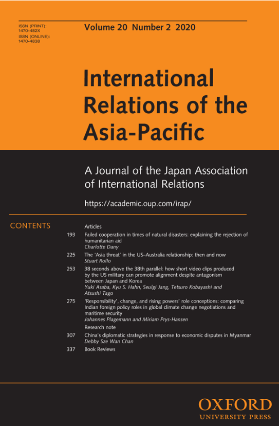

收录于合集

期刊简介

International Relations of Asia- Pacific，成立于2001年，由牛津大学出版社代表日本国际关系协会出版，每年1月、5月和9月出版共三次。该期刊主要关注亚太地区的国际政治动态，包括中国国内政治、美国在亚太地区的地位、地区治理、日本对外关系、亚洲与国际关系理论、中国的全球化道路以及中国的国家认同等。根据2018 Journal Citation Reports显示，其影响因子为1.233。
本期编委
【编译】 吕紫烟 石雨宸 邵良 冯毓婧 柯孜凝
【审校】 李博轩 王国欣 姚寰宇
【排版】 梁鑫昱

本期目录
1. 自然灾害中的失败合作：剖析拒绝人道主义援助的原因
Failed cooperation in times of natural disasters: explaining the rejection of humanitarian aid
2. 美澳关系中的“亚洲威胁”：过去和现在
The ‘Asia threat’ in the US–Australia relationship: then and now
3. 三八线上38秒：美军制作的视频短片如何改善日韩盟友关系
38 seconds above the 38th parallel: how short video clips produced by the US military can promote alignment despite antagonism between Japan and Korea
4. “责任”、变化和崛起大国的角色构想：比较印度在全球气候变化谈判和海上安全中的外交政策角色
‘Responsibility’, change, and rising powers’ role conceptions: comparing Indian foreign policy roles in global climate change negotiations and maritime security
5. 中国应对缅甸经济纠纷的外交策略
China’s diplomatic strategies in response to economic disputes in Myanmar
01
自然灾害中的失败合作：剖析拒绝人道主义援助的原因
【题目】Failed cooperation in times of natural disasters: explaining the rejection of humanitarian aid
【作者】Charlotte Dany，德国法兰克福市歌德大学政治科学系。
【摘要】为什么经济发达的民主国家在发生严重的自然灾害后，会拒绝人道主义援助？本文以日本神户地震（1995年）、印度洋海啸（2004年）中印度的应对，以及美国卡特里娜飓风（2005年）为例，通过分析决策者的“自我认知”和“他者认知”，对这一行为做出了解释。其中，“自我认知”受到可管理性、国家角色认知和国内政治等因素的影响，而“他者认知”主要受到与援助者关系和援助性质的影响。作者发现，在备灾充分且经济发达的民主国家，自身具备充足的灾害管理能力并不是国家领导人拒绝人道主义援助的唯一原因。具体而言，官僚主义堡垒、行政失灵、对老牌或新兴援助国身份的认知以及国内政治因素都有可能影响国家决策。当前的主流说法基本上都把关注点放在财富和能力上，但这是过于短视的。给予和拒绝人道主义援助其实都有政治因素的考虑。
This article asks why economically strong democracies reject humanitarian aid after severe natural disasters, focusing on the Kobe earthquake in Japan (1995), India’s response to the Indian Ocean tsunami (2004), and Hurricane Katrina in the United States (2005). It explains these rejections of humanitarian aid by analyzing the decision-makers’ ‘self-perceptions’ through the factors of manageability, national role perceptions, and domestic political impact, as well as ‘other-perceptions’ through their relations to donors and the nature of the aid offers. It finds that even in those disaster- prepared and economically strong democracies, state leaders rejected humanitarian aid not simply because they had sufficient disaster management capabilities. Rather, bureaucratic hurdles and administrative failure impeded aid acceptance. Moreover, conceptions of those countries’ roles as established or emerging donors, as well as domestic political factors influenced their decisions. Ultimately, the dominant explanations focusing on wealth and capabilities are thus too shortsighted. Not only giving but also rejecting humanitarian aid follows political considerations.
【编译】 吕紫烟
【审校】 姚寰宇
02
美澳关系中的“亚洲威胁”：过去和现在
【题目】The ‘Asia threat’ in the US–Australia relationship: then and now
【作者】Stuart Rollo，悉尼大学政府和国际关系系研究助理
【摘要】美国和澳大利亚的双边关系在1941年正式结盟之前的近一个世纪里是围绕身份认同以及经济、政治和战略利益等相互关联的认知而形成的。双方对于共同利益的首要因素的认知达成了一致，即相互加强的“亚洲威胁”恐惧，这种恐惧最初源于19世纪50年代淘金热时期的中国移民浪潮，随后发展为对日本帝国日益增长的军事力量和太平洋地区的地缘战略主导地位的担忧。近年来，中国的崛起一直是美澳联盟的中心焦点，而从多个角度来说，对抗中国的安全构想也是“亚洲威胁”的历史遗产。就从当代安全政策中消除过时的“亚洲威胁”观念而言，理解两国关系的历史背景是必要的。
For almost a century before the formal alliance between the United States and Australia in 1941, a relationship was being formed around interrelated perceptions of shared identity and economic, political, and strategic interests. Perhaps the single most important factor in the recognition of shared interests lay in the mutually reinforcing fears of a multilayered ‘Asia threat’ that developed in parallel in both countries, originating as a demographic fear over Chinese migration during gold rushes of the 1850s, and progressing to focus on the growing military power of imperial Japan and geostrategic dominance of the Pacific. In recent years, the rise of China has been the central focus of US–Australia alliance, and, in many respects, the security architecture used to confront China is a legacy of the historical ‘Asia threat’. Understanding the historical context of the relationship is necessary for dispelling the anachronistic ‘Asia threat’ perceptions from the contemporary security policy.
【编译】 石雨宸
【审校】 李博轩
03
三八线上38秒：美军制作的视频短片如何改善日韩盟友关系
【题目】38 seconds above the 38th parallel: how short video clips produced by the US military can promote alignment despite antagonism between Japan and Korea
【作者】Yuki Asaba, 日本新泻县立大学国际研究与区域发展学院；Kyu S Hahn, 韩国首尔大学传播系；Seulgi Jang, 韩国首尔大学传播系；Tetsuro Kobayashi, 香港城市大学媒体与传播系；Atsushi Tago, 日本早稻田大学政治科学与经济学院；日本神户大学法学研究科；挪威奥斯陆和平研究所。
【摘要】国际关系领域研究人员正日益关注如何采用科学方法衡量和检验公共外交的有效性。虽然已经有了各种各样的关于公共外交影响力的实证研究，但是已有的这些研究大多集中在各国外事部门发起的活动上。与此不同的是，本文关注军方推行公共外交的有效性。具体来说，本文认为军方创造的图像和视频有能力改变信息接收者的感觉。在这项特别的研究中，我们发现，美国军方制作的38秒短视频会引发促进合作的积极情绪，而如果没有这些视频，韩国和日本之间的合作将很难维持——这两个国家的关系非常不稳定，但面对朝鲜日益增长的威胁，二者都是美国不可或缺的盟友。
The effectiveness of public diplomacy is now increasingly the subject of scientific measurement and testing by researchers in the field of International Relations. While there are variety of empirical efforts to uncover the power of public diplomacy, extant studies have mostly focused on the activities initiated by the ministries in charge of external relations. In this article, rather than external relations ministries and agencies, we focus on the effectiveness of public diplomacy by the military. Specifically, we argue that figures, pictures and indeed videos created by military forces have power in changing perceptions among the receivers of the information. In this particular study, we show that a 38 second video made by the US military induces positive feelings for cooperation which would otherwise be difficult to sustain between South Korea and Japan — two countries which have suffered highly fractious relations, yet which are indispensable allies to the US in countering the rising threat from North Korea.
【编译】 邵良
【审校】 姚寰宇
04
“责任”、变化和崛起大国的角色构想：比较印度在全球气候变化谈判和海上安全中的外交政策角色
【题目】‘Responsibility’, change, and rising powers’ role conceptions: comparing Indian foreign policy roles in global climate change negotiations and maritime security
【作者】Johannes Plagemann, 法兰克福大学政治学系副教授；
Miriam Prys-Hansen，德国全球和区域研究中心项目研究负责人。
【摘要】强劲的经济增长力和自信的政治领导力使印度在全球治理中的地位日益突出。尽管传统学术观点认为印度的外交政策注重连续性，但本文要探讨的是印度在气候变化和海上安全两个政策领域的自我角色构想是如何变化的。本文采用角色理论方法（role theoretical approach）来分析印度的官方声明，认为这些声明反映了印度的自我理解和对其他重要行为体的看法。尽管印度在这两个问题领域的角色构想都有所变化，但在海上安全领域自我定位的转变却更为深刻。通过比较，本文发现，促使印度的新兴大国角色向“更多责任”承担者转变的三个因素是:第一，权力分享比责任分担更有利；第二，锚定区域内的问题领域比全球政治层面的问题领域更能促使其发挥更负责任的作用；第三，积极的外部角色归属（role ascription）比消极的外部角色归属对责任承担更有效。
Strong economic growth and assertive political leadership have made India an increasingly prominent player in global governance. Whereas conventional scholarship of India’s foreign policy underlines continuity, this article explores how India’s self-conception has changed across two policy fields (climate change and maritime security). Adopting a role theoretical approach, we analyze official statements as a mirror of both India’s self-understanding and its view on the roles of significant other actors. Although both issue- areas exhibit change, India’s self-ascribed role has been transformed more profoundly in the maritime domain. Our comparison suggests three factors to particularly induce transformation of rising powers’ roles toward ‘more responsibility’: First, power-sharing is more conducive than burden-sharing; second, issue areas with strong regional anchors are more likely to induce the adoption of a more responsible role than those areas situated primarily at the global level of politics; and third, positive external role ascriptions are more effective than negative ones.
【编译】 冯毓婧
【审校】 李博轩
05
中国应对缅甸经济纠纷的外交策略
【题目】China’s diplomatic strategies in response to economic disputes in Myanmar
【作者】Debby Sze Wan Chan，香港大学政治和公共管理系
【摘要】（合作项目）东道国的社会角色如何影响中国政府的外交战略？在缅甸政治转型的进程中，密松水电站于2011年停工，中缅高速铁路则于2014年停建。据说从那时起，中国政府就针对这些经济挫折采取了公共外交措施。但本文发现中国政府针对二者的做法有所不同，中国政府积极与水电站项目的反对者协调互动，但对铁路项目并不积极，因为后者提出的挑战较少。此外，中国政府虽然对水电站项目的停工表现出了容忍的态度，但在铁路项目中却通过增加缅甸政府的背叛成本向其施压。中国政府不一致的外交态度源于缅甸社会对中国项目建设的反对程度不同。因此，如果中国政府认为缅甸的社会反对力量不是双边经济合作的主要障碍，就倾向于绕开社会角色并向缅甸政府施加压力，要求其继续进行项目。
How do societal actors in the host country matter to Beijing’s diplomatic strategies? In the course of political transition in Myanmar, the Myitsone Dam was suspended in 2011, and the China–Myanmar High-Speed Railway was reportedly halted in 2014. Since then, Beijing is said to have adopted public diplomacy in response to these economic setbacks. However, this article finds variations in Beijing’s approaches; Beijing actively engaged with the dam challengers, but not the railway opponents, who offered less of a challenge. Moreover, Beijing tolerated the project’s suspension in the dam case, but ramped up pressure in the railway case by increasing Naypyitaw’s costs of defection. Beijing’s inconsistent diplomatic approaches are attributed to different levels of social opposition observed in the anti-Chinese project movements. As such, Beijing has the propensity to bypass societal actors and pressure Naypyitaw for project continuation if it perceives that social opposition is not a major obstacle in bilateral economic cooperation.
【编译】 柯孜凝
【校对】 王国欣

添加 “国小政”微信，获取最新资讯


好好学习，天天“在看”
国政学人
支持学术公益与知识传播
微信扫一扫赞赏作者 __赞赏
已喜欢，对作者说句悄悄话
取消 __
发送给作者
发送
最多40字，当前共字
上一页 1/3 下一页
长按二维码向我转账
支持学术公益与知识传播
受苹果公司新规定影响，微信 iOS 版的赞赏功能被关闭，可通过二维码转账支持公众号。